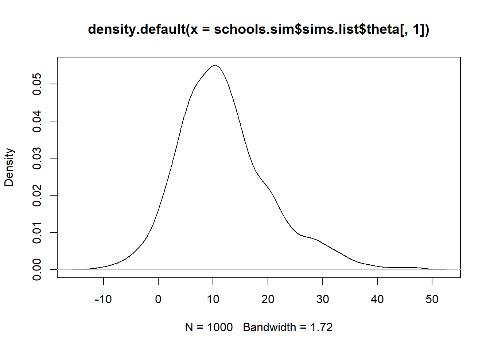

model{
for (i in 1:20){
x[i] ~ dnorm (mu, prec)
}
mu ~ dnorm (0, 0.00001)
prec ~ dgamma (0.001, 0.001)
s2 <- 1/prec
}
list(x = c(6.62, 6.71, 5.07, 4.39, 5.68, 3.94, 5.83, 2.31, 3.60, 4.64,
1.79, 3.12, 3.46, 8.25, 5.49, 6.49, 2.65, 9.14, 5.31, 6.58))
list( mu=0, prec=1 )Getting start with WinBUGS
The BUGS (Bayesian inference Using Gibbs Sampling) is a project on developing software for the Bayesian analysis of complex statistical models using Markov chain Monte Carlo (MCMC) methods. The project started in 1989 at the MRC Biostatistics Unit. WinBUGS is a statistical software based on BUGS project initially released in 1997 by MRC Biostatistics Unit, and Imperial College School of Medicine. It is a GUI for using BUGS program on Windows system. WinBUGS is no longer update since 2007 because the development of OpenBUGS. The latest version of WinBUGS is 1.4.3.
Installation of WinBUGS 1.4.3
Download WinBUGS 1.4.3 on your PC:
Extract file folder
\winbugs143_unrestricted.zip\winbugs14_full_patched\WinBUGS14to a path that you want to store the software, for exampleC:\Program Files.Create a shortcut for
WinBUGS14.exeto desktop or start.
For macOS, please check the link.
Example: Syntax and operation
Consider a statistical model \[ X_i \sim \text{Normal}(\mu,\sigma^2) \] and given the prior distributions \(\mu \sim \text{Normal}(0, 100^2)\) and \(1 / {\sigma}^2 \sim \text{Gamma}(0.001, 0.001)\).
A WinBUGS program consists of three sections: Model, Data, and Initial Values. Define our model in model{...}. Use ~ to specify probability distributions, or use <- to make transformation of parameters and data. Data will be stored in a list which has the same syntax as R. Initial values are also stored in a list.
Note: In BUGS, the second parameter of dnorm is the inverse of normal variance.
Now let’s see how to run these codes in WinBUGS. Open WinBUGS and create an empty script (File -> New). 
Copy the above code and paste them into WinBUGS. 
Open the Specification Tool (Model -> Specification), then highlight the model section and do “check model”. If you define your model correctly, it will show “model is syntactically correct” at the bottom left-hand corner. 
The next step is to load the data. Highlight data section and click “load data”. You will see “data loaded”at the bottom left-hand corner. 
And then compile the model by click “compile” and look for “model compiled”. 
Similarly, highlight the initial values and click “load inits”. 
Open Sample Monitor Tool (Inference -> Samples), type in the parameters that we are going to monitor, for example “mu” and “s2”, then click “set”. 
Open Update Tool (Model -> Update) and type in how many samples you would like to generate. Click “update” and wait for “updates took x s” message when update done. 
You can use Sample Monitor Tool to do summary statistics, time series plot for MCMC samples, density curve, etc. 
Example: Use doodle
DoodleBUGS is a special visualized tool in WinBUGS. You can specify graphical models by doodle, which uses a hyper-diagram approach to add extra information to the graph to give a complete model specification.
First, create a new script for doodle. (Doodle -> New) 
Doodle includes three types of objects: node, plate, and edge. Easily speaking, node uses for specifying parameters and data. Plate is the loop structure. Edge builds the connection between the nodes. Operation on these objects are as follow:
| Operation | Node | Plate | Edge (A -> B) |
|---|---|---|---|
| Creating | Click an empty region | ctrl+ click an empty region |
Select B then ctrl + click A |
| Selecting | Click the node | Click the bottom or right border | |
| Deleting | Select then del |
Select then ctrl + del |
Select B then ctrl + click A |
| Moving | Select and drag | Select then drag the border | |
| Resizing | Select and hold the bottom right corner, then drag |

Suppose we have a logistic regression model: \[y_i|\pi_i \sim \text{Bernoulli}(\pi_i)\] where the logit link is \(\text{logit}(\pi_i)=\alpha+\beta x_i\) and the hyper-priors are \(\alpha \sim \beta \sim \text{Normal}(0, 10^6)\). Try to specify the model using doodle. Once finished, the doodle can easily transform to the script of BUGS (Doodle -> Write Code). 
Connect to R: R2WinBUGS
R2WinBUGS is a package which provides an interface for running WinBUGS on R. The computation still rely on WinBUGS, but coding job can be done in R. It will be much more easier to create BUGS script files, convert data, and analyze posterior MCMC samples.
Install R2WinBUGS package
Use install.packages and library to install and load the package.
#install.packages("R2WinBUGS")
library("R2WinBUGS")School data example
The Scholastic Aptitude Test (SAT) data comes from the SAT-V (Verbal) on eight different high schools from an experiment Rubin (1981). The data includes the estimated treatment effects and the corresponding standard error from an ANCOVA. This example was analyzed using a hierarchical normal model: \[ y_j|\theta_j, \sigma_j^2 \sim \text{Normal}(\theta_j, \sigma_j^2=1/\tau_j) \] given the priors and hyperpriors \(\theta_j \sim \text{N}(\mu_\theta, \sigma_\theta^2=1/\tau_\theta)\), \(\mu_\theta \sim \text{N}(0, 10^6)\), and \(\sigma_\theta \sim \text{U}(0, 1000)\).
data(schools)
schools school estimate sd
1 A 28.39 14.9
2 B 7.94 10.2
3 C -2.75 16.3
4 D 6.82 11.0
5 E -0.64 9.4
6 F 0.63 11.4
7 G 18.01 10.4
8 H 12.16 17.6Model specification
To specify the model, we use the same syntax as we did in WinBUGS. Then create a .txt or .bug file to store the model at local path. It is also allowed to use a function containing a BUGS model since is has the similar syntax as R. While applying this model, only a temporary file will be created.
mod1 <- function(){
for (j in 1:J)
{
y[j] ~ dnorm (theta[j], tau.y[j])
theta[j] ~ dnorm (mu.theta, tau.theta)
tau.y[j] <- pow(sigma.y[j], -2)
}
mu.theta ~ dnorm (0.0, 1.0E-6)
tau.theta <- pow(sigma.theta, -2)
sigma.theta ~ dunif (0, 1000)
}Note: When using truncation specification, %_% will be needed. Check ?R2WinBUGS::write.model() for more details.
Load data and initial values
Data and initial values can be arranged as lists in R script. Save initial values lists to be function avoid repeated specifying values for multiple chains.
J <- nrow(schools)
y <- schools$estimate
sigma.y <- schools$sd
data <- list("J", "y", "sigma.y")
inits <- function(){
list(theta = rnorm(J, 0, 100),
mu.theta = rnorm(1, 0, 100),
sigma.theta = runif(1, 0, 100))
}Run sampler
The sampler function bugs() has many arguments to control the sample generation process. For details, please see ?R2WinBUGS::bugs(). The output is a bugs object. We can take the MCMC samples from it and do further inference. ()
schools.sim <- bugs(data = data,
inits = inits,
model.file = mod1,
parameters.to.save
= c("theta", "mu.theta", "sigma.theta"),
n.chains = 4,
n.iter = 2000,
bugs.directory = "c:/Program Files/WinBUGS14/")Error in file(con, "wb") : cannot open the connectionNote: If you receive any error message about “Cannot open the connection” or “Permission denied”, please reopen Rstudio with Run as administrator.
Inference on MCMC samples
Just show some basic analysis. You can play more on it. Other packages like posterior and mcmc are also suggested.
# summary statistics
print(schools.sim)Inference for Bugs model at "C:/Users/Xinwei/AppData/Local/Temp/RtmpuCiakQ/model72dc354f7cfe.txt", fit using WinBUGS,
4 chains, each with 2000 iterations (first 1000 discarded), n.thin = 4
n.sims = 1000 iterations saved
mean sd 2.5% 25% 50% 75% 97.5% Rhat n.eff
theta[1] 12.4 8.8 -2.1 6.5 11.2 16.7 32.9 1.0 180
theta[2] 8.3 6.6 -3.5 3.6 8.2 12.7 21.3 1.0 160
theta[3] 6.4 8.2 -9.5 1.2 6.5 11.3 21.5 1.0 540
theta[4] 7.8 6.8 -5.3 3.5 7.7 12.5 21.0 1.0 240
theta[5] 5.5 7.2 -9.8 1.2 5.9 10.3 17.3 1.0 170
theta[6] 6.2 7.3 -10.2 1.9 6.4 10.8 18.9 1.0 180
theta[7] 11.1 7.6 -2.0 6.0 10.3 16.3 28.2 1.0 340
theta[8] 9.0 8.1 -7.1 4.0 8.9 13.8 26.5 1.0 240
mu.theta 8.3 5.5 -1.8 4.5 8.1 11.9 18.3 1.0 180
sigma.theta 7.0 5.9 0.1 2.7 5.7 9.6 20.8 1.2 49
deviance 60.7 2.4 56.9 59.1 60.2 61.9 66.6 1.0 130
For each parameter, n.eff is a crude measure of effective sample size,
and Rhat is the potential scale reduction factor (at convergence, Rhat=1).
DIC info (using the rule, pD = Dbar-Dhat)
pD = 3.1 and DIC = 63.8
DIC is an estimate of expected predictive error (lower deviance is better).plot(schools.sim)# time series plot
plot(schools.sim$sims.list$theta[,1]~c(1:schools.sim$n.sims),
type = "l",
col = "red",
xlab = "t",
ylab = expression(theta[1]))# density for theta_1
plot(density(schools.sim$sims.list$theta[,1]))
# More inference
# Probability calculation
mean(schools.sim$sims.list$theta[,1]>10)[1] 0.565# Compare the treatment effect
mean(schools.sim$sims.list$theta[,1])>mean(schools.sim$sims.list$theta[,3])[1] TRUEFor more examples, see Sturtz, Ligges, and Gelman (2005) and Dominici (n.d.)
Softwares
Comparisons
| Feature | BUGS | JAGS | STAN |
|---|---|---|---|
| Algorithms | GS, MH | GS, MH | Hamiltonian MC |
| Model complexity | Moderate | Moderate | High |
| Syntax | S | S | C++ |
| Interface | WinBUGS, OpenBUGS | R | R, Python, MATLAB, etc. |
| R packages | R2WinBUGS | rjags, R2jags | RStan, Cmdstanr |
| User Community | Not active | Large and active | Large and active |
Intersting visualization
A very interesting and well-produced web page: The Markov-chain Monte Carlo Interactive Gallery Feng (n.d.)
References
Dominici, Francesca. n.d. “Lab 8: Introduction to WinBUGS.” ML - Bio 656 Lectures. https://www.biostat.jhsph.edu/~fdominic/teaching/bio656/lectures/lectures.html.
Feng, Chi. n.d. MCMC Interactive Gallery. https://chi-feng.github.io/mcmc-demo/app.html.
Rubin, Donald B. 1981. “Estimation in Parallel Randomized Experiments.” Journal of Educational Statistics 6 (4): 377–401.
Sturtz, Sibylle, Uwe Ligges, and Andrew Gelman. 2005. “R2WinBUGS: A Package for Running WinBUGS from r.” Journal of Statistical Software 12: 1–16.